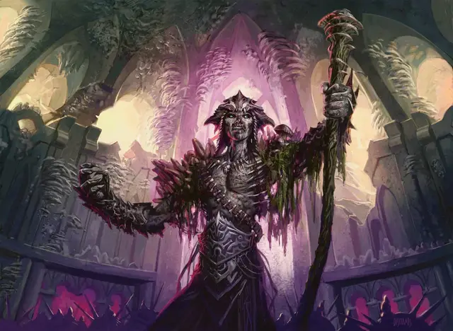

Джарад Вод Саво
Jarad Vod Savo
Средняя Нежить, нейтрально-злая, именной НИП

Класс Доспеха 17 (природный доспех)
Хиты 180 (24к8 + 72)
Скорость 30 футов
| мод | спас | ||
|---|---|---|---|
| СИЛ | 14 | +2 | +2 |
| ЛОВ | 16 | +3 | +3 |
| ТЕЛ | 16 | +3 | +10 |
| мод | спас | ||
|---|---|---|---|
| ИНТ | 20 | +5 | +12 |
| МДР | 16 | +3 | +10 |
| ХАР | 15 | +2 | +2 |
Навыки Восприятие +10, Магия +12, Проницательность +10
Сопротивление урону некротическая энергия; дробящий, колющий, рубящий от немагических атак
Иммунитет к урону яд
Иммунитет к состояниям испуг, истощение, отравление, очарование, паралич
Чувства тёмное зрение 120 футов, пассивное Восприятие 20
Языки Общий, Краул, Эльфийский
Опасность 22 (41000 опыта)
Бонус мастерства +7
Особенности
Легендарное сопротивление (3/день). Если. Джарад проваливает спасбросок, он может сделать спасбросок успешным.
Сопротивление магии. Джарад совершает с преимуществом спасброски от заклинаний и других магических эффектов.
Регенерация. Джарад восстанавливает 25 хитов в начале своего хода. Если он получает урон огнём или излучением, эта способность не действует в начале его следующего хода. Он умирает, только если начинает ход с 0 хитов и не регенерирует.
Использование заклинаний. Джарад является заклинателем Голгари 14-го уровня. Его базовая характеристикой заклинания является Интеллект (Сл спасброска от заклинаний 20, +12 к попаданию атаками заклинаниями). У него приготовлены следующие заклинания волшебника:
• Заговоры (неограниченно): брызги кислоты [acid splash], леденящее прикосновение [chill touch], волшебная рука [mage hand], ядовитые брызги [poison spray], фокусы [prestidigitation];
• 1 уровень (4 ячейки): опутывание [entangle], луч болезни [ray of sickness], усыпление [sleep];
• 2 уровень (3 ячейки): мельфова кислотная стрела [melf's acid arrow], луч слабости [ray of enfeeblement], паук [spider climb], паутина [web];
• 3 уровень (3 ячейки): восставший труп [animate dead], рост растений [plant growth], прикосновение вампира [vampiric touch];
• 4 уровень (3 ячейки): усыхание [blight], гигантское насекомое [giant insect], цепкая лоза [grasping vine];
• 5 уровень (2 ячейки): облако смерти [cloudkill], нашествие насекомых [insect plague];
• 6 уровень (1 ячейка): круг смерти [circle of death], сотворение нежити [create undead];
• 7 уровень (1 ячейка): перст смерти [finger of death], узилище [forcecage].
Споровый настой. Джарад окружен облаком спор. Бонусным действием он может заставить споры нанести 11 (2к10) урона ядом существу, которое он видит в пределах 10 футов от себя.
Сопротивление изгнанию. Джарад совершает с преимуществом спасброски против любого эффекта, изгоняющего нежить.
Стойкость нежити. Если урон снижает хиты Джарада до 0, он должен совершить спасбросок Телосложения со Сл 5 + полученный урон, если только урон не является излучением или от критического попадания. Вместо этого при успехе его хиты опускаются до 1.
ЧЕРТЫ джарада Вод Саво.
Идеал. : «Смерть. В ней можно обрести мудрость, будь то своя или чужая».
Привязанность. : «Равника, со всеми её структурами и институтами, в конце концов сгниет, и наступит время, когда из туши расцветут Голгари».
Слабость: «Я за гранью жизни и смерти, и мне нельзя причинить вред».
Действия
Мультиатака. Джарад совершает две атаки: одну Пагубным прикосновением и одну Посохом Свогтира. Он может наложить заклинание со временем накладывания "1 действие" вместо одной из этих атак.
Пагубное прикосновение. Рукопашная атака заклинанием: +12 к попаданию, досягаемость 5 фт., одно существо. Попадание: 28 (8к6) урона ядом, и цель должна преуспеть в спасброске Телосложения Сл 20, иначе станет отравленной на 1 минуту. Цель может повторять спасбросок в конце каждого своего хода, оканчивая эффект на себе в случае успеха.
Посох Свогтира. . Рукопашная атака оружием: +12 к попаданию, досягаемость 5 фт., одна цель. Попадание: 12 (2к6 + 5) дробящего урона плюс 13 (3к8) урона ядом и 13 (3к8) урона некротической энергией.
Легендарные действия
Джарад Вод Саво может совершить 3 легендарных действия, выбирая из представленных ниже вариантов. За один раз можно использовать только одно легендарное действие, и только в конце хода другого существа. Джарад Вод Саво восстанавливает использованные легендарные действия в начале своего хода.
Заговор. Джарад накладывает один из своих заговоров.
Пагубное прикосновение (стоит 2 действия). Джарад использует Пагубное прикосновение.
Прерывание жизни (стоит 3 действия). Каждое существо в пределах 30 футов от Джарада должно совершить спасбросок Телосложения Сл 20, получая 35 (10к6) урона некротической энергией при провале или половину этого урона при успехе.
Описание
Глава гильдии Голгари — девкарин-некромант и лич по имени Джарад Вод Саво. При жизни Джарад был лучником и опытным охотником, а также братом предыдущего гильдмастера, амбициозного Савры. Джарад овладел методами некромантии, чтобы стать личем после того, как пожертвовал собой, чтобы спасти своего сына от демона Ракдоса.
Как глава Роя Голгари, Джарад командует убийцами-эльфами и медузами, легионами краулей, звероподобными троллями и массами обитающих в подземельях существ. Благодаря некромантической силе, которой он обладает, и при поддержке своих верных охранников и солдат, он пережил ряд покушений со стороны различных выскочек.
Природа нежити. Джараду не нужен воздух, еда, питье или сон.